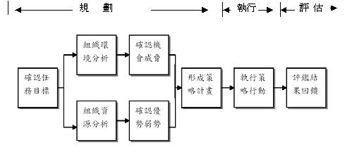

第 05 講 - (影音)非營利組織的使命與策略規劃
講次摘要
壹、講次提要：
一、使命的意涵與重要性
二、非營利組織的策略規劃
貳、講次內容：
此講次將先從使命此概念談起，並對使命的意涵及其重要性進行詳細的解說；其次則從策略規劃的角度論非營利組織應如何運用策略規劃的觀念來從事相關的管理活動與方案的規劃。
一、使命的意涵與重要性
使命通常是指組織之所以存在的理由與所追求的價值，也就是組織的存在與否對於其關係人和社會產生的價值貢獻。簡單說，使命代表了組織存在的根本價值。使命宣言(mission statement)要能精要地揭櫫了組織存在的目的與管理的哲學，其雖精要，但卻能明確地指出組織存在的根本理由，為組織建立起自己的經營範疇，並找出自己的獨一無二的特徵。若就管理的角度言之，使命的主要功能大約有以下六點：
1.使命指出未來共同努力的方向，可形成與聚集成員的貢獻：因為成員若對組織的經營方針與理念有共識，則較易協同合作並朝此方向邁進。
2.使命可以避免目標間相互衝突的產生:因有了使命所指引的方向，故組織不致去追求相互衝突的目標。
3.使命是資源分配的準則：使命揭示了組織應如何獲取、分配與運用資源的一般指導原則，以避免珍貴資源的浪費與誤用。
4.使命提供工作時的廣泛指導原則：因有使命的協調與指引，故各部門與成員間的工作或活動能取得一致的共識，不致出現多頭馬車的問題。
5.使命可以作為發展組織後續目標的基礎：使命指出組織之所以存在的理由與根本的價值，所以可做為組織發展後續目標的基礎，任何與使命不一致的目標均應加以修正或調整。
6.使命可以建立一種組織基調或組織氣候：使命傳達出組織所追求的基本價值，因此提供了形成組織氣候的基礎；另使命所揭櫫的「有所為、有所不為」的宣言，亦建構出組織活動的基調。
二、非營利組織的策略規劃
策略是指達成使命或目標的方法，而策略規劃則是在內外環境評估後，針對組織中所存在的機會(Opportunity)與威脅（Threat），以及組織本身所擁有之優勢(Strength)與弱勢（Weakness）等條件的評估後，所形成的策略過程，有人又以SWOT分析來程之。而策略管理則是除了策略規劃外，再加上執行所評估等二個階段，故策略規劃應是策略管理中的一環而言，其間的關係如圖5-1所示。
一套完整的策略管理程序計有八項步驟（詳如圖5-1）:1.界定組織目前使命、目標、策略；2.環境分析（外部環境）；3.確認機會與威脅（O.T分析）；4.分析組織資源（內部環境）；5.確認優勢與弱勢（SW分析）；6.策略形成（SWOT分析）；7.執行策略；8.結果評估。

圖5-1 策略管理的程序
資料來源：Robbins, S.P.,& Coulter, M(1996:259)，.Management, New Jersey:Prentice-Hall.
黃新福老師提供